rm(list = ls())
if(!require(tidyverse)){
install.packages("tidyverse")
library(tidyverse)
}Οπτικοποίηση δεδομένων με το πακέτο ggplot2
1 Προαπαιτούμενα
mpg# A tibble: 234 × 11
manufacturer model displ year cyl trans drv cty hwy fl class
<chr> <chr> <dbl> <int> <int> <chr> <chr> <int> <int> <chr> <chr>
1 audi a4 1.8 1999 4 auto… f 18 29 p comp…
2 audi a4 1.8 1999 4 manu… f 21 29 p comp…
3 audi a4 2 2008 4 manu… f 20 31 p comp…
4 audi a4 2 2008 4 auto… f 21 30 p comp…
5 audi a4 2.8 1999 6 auto… f 16 26 p comp…
6 audi a4 2.8 1999 6 manu… f 18 26 p comp…
7 audi a4 3.1 2008 6 auto… f 18 27 p comp…
8 audi a4 quattro 1.8 1999 4 manu… 4 18 26 p comp…
9 audi a4 quattro 1.8 1999 4 auto… 4 16 25 p comp…
10 audi a4 quattro 2 2008 4 manu… 4 20 28 p comp…
# ℹ 224 more rows2 Γράφημα διασποράς (geom_point)
2.1 Απλό
ggplot(data=mpg)+geom_point(mapping=aes(x=displ, y=hwy))
2.2 Αισθητικές παρεμβάσεις
ggplot(data=mpg)+geom_point(mapping = aes(x=displ, y=hwy, color=class))
ggplot(data = mpg)+geom_point(mapping = aes(x=displ, y=hwy, size = cyl))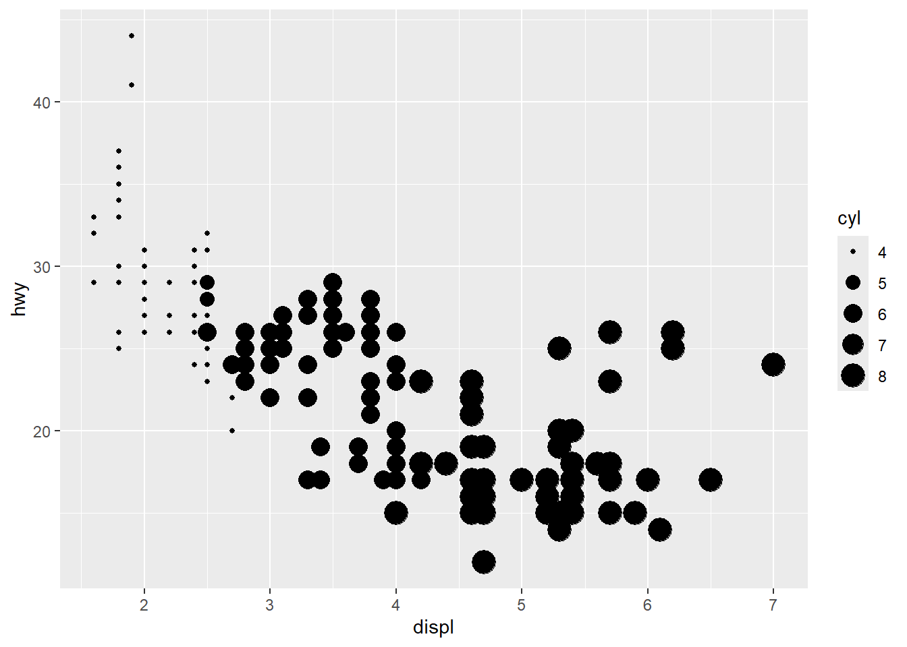
ggplot(data = mpg) + geom_point(mapping = aes(x=displ, y=hwy, shape = class))Warning: The shape palette can deal with a maximum of 6 discrete values because more
than 6 becomes difficult to discriminate
ℹ you have requested 7 values. Consider specifying shapes manually if you need
that many of them.Warning: Removed 62 rows containing missing values or values outside the scale range
(`geom_point()`).
2.3 Όψεις
ggplot(data = mpg) + geom_point(mapping = aes(x=displ, y=hwy))+facet_wrap(~ class, nrow=2)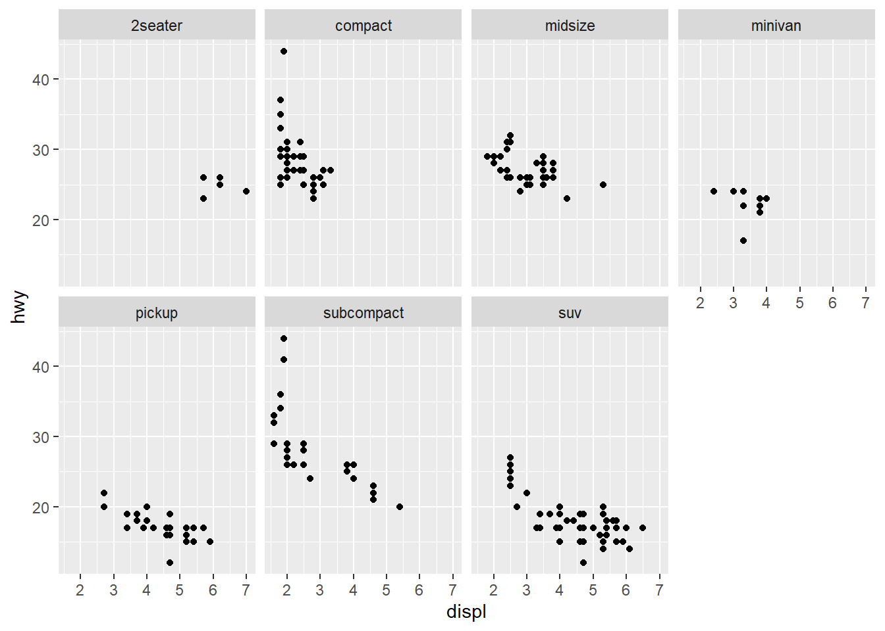
ggplot(data = mpg) + geom_point(mapping = aes(x=displ, y=hwy)) + facet_grid(drv~cyl)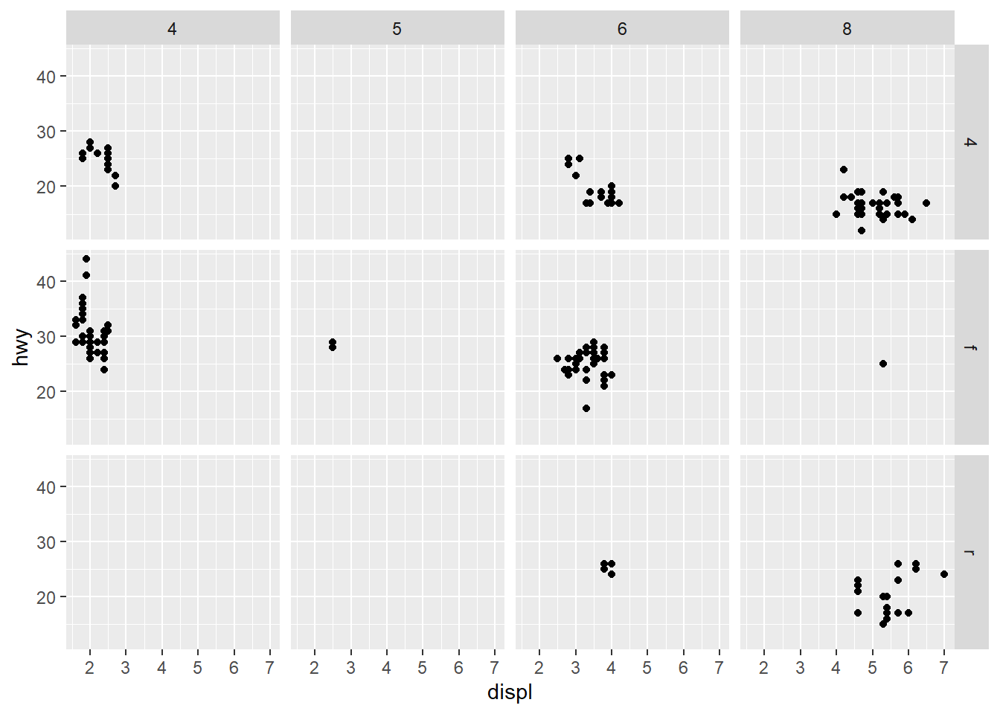
ggplot(data = mpg) + geom_point(mapping = aes(x=displ, y = hwy)) + facet_grid(drv ~.)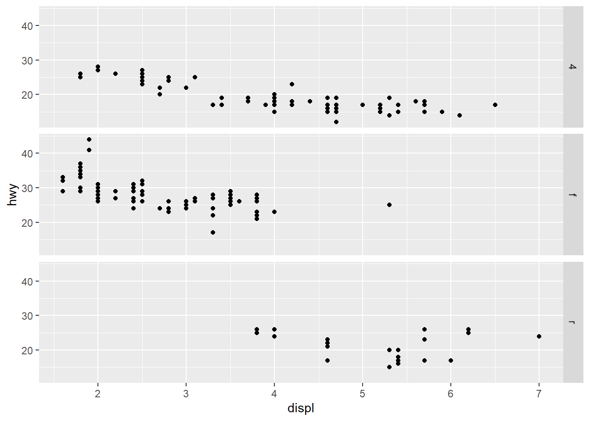
ggplot(data = mpg) + geom_point(mapping = aes(x=displ, y=hwy)) + facet_grid(.~ cyl)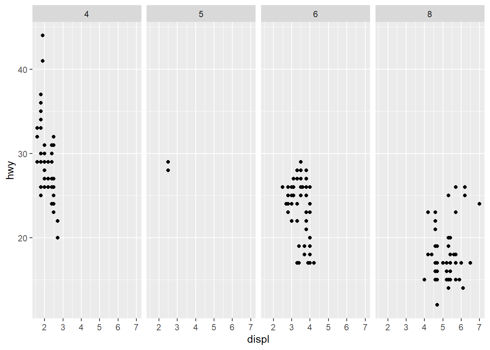
3 Καμπύλη παλινδρόμησης (geom_smooth)
3.1 Μεμονομένη
ggplot(data = mpg) + geom_smooth(mapping = aes(x=displ, y = hwy))`geom_smooth()` using method = 'loess' and formula = 'y ~ x'
3.2 Με συνδυασμούς
ggplot(data = mpg) + geom_smooth(mapping = aes(x= displ, y=hwy, linetype = drv, color = drv)) +geom_point(mapping = aes(x= displ, y= hwy, color = drv))`geom_smooth()` using method = 'loess' and formula = 'y ~ x'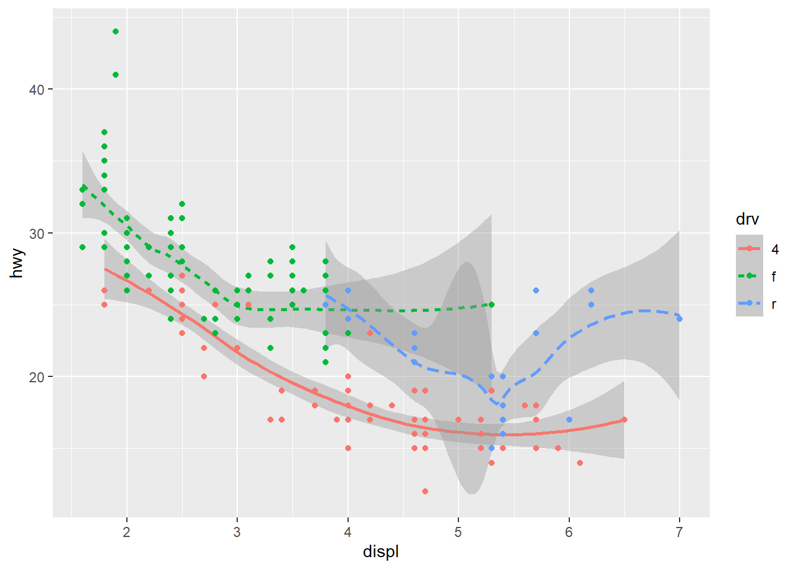
ggplot(data = mpg, mapping = aes(x=displ, y=hwy)) + geom_point(aes(color=class)) + geom_smooth(aes(linetype = drv)) `geom_smooth()` using method = 'loess' and formula = 'y ~ x'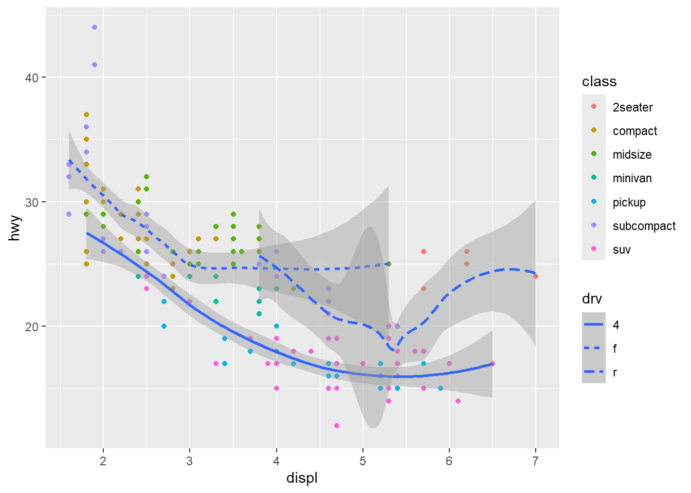
3.3 Φιλτράρισμα
ggplot(data = mpg, mapping = aes(x=displ, y=hwy)) + geom_point(aes(colour = class)) + geom_smooth(data = filter(mpg, class=="subcompact"), se = F)`geom_smooth()` using method = 'loess' and formula = 'y ~ x'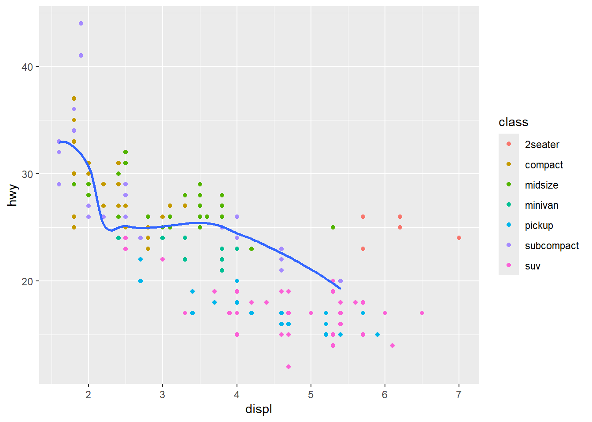
4 Ραβδόγραμμα (geom_bar)
4.1 Απόλυτων συχνοτήτων
diamonds# A tibble: 53,940 × 10
carat cut color clarity depth table price x y z
<dbl> <ord> <ord> <ord> <dbl> <dbl> <int> <dbl> <dbl> <dbl>
1 0.23 Ideal E SI2 61.5 55 326 3.95 3.98 2.43
2 0.21 Premium E SI1 59.8 61 326 3.89 3.84 2.31
3 0.23 Good E VS1 56.9 65 327 4.05 4.07 2.31
4 0.29 Premium I VS2 62.4 58 334 4.2 4.23 2.63
5 0.31 Good J SI2 63.3 58 335 4.34 4.35 2.75
6 0.24 Very Good J VVS2 62.8 57 336 3.94 3.96 2.48
7 0.24 Very Good I VVS1 62.3 57 336 3.95 3.98 2.47
8 0.26 Very Good H SI1 61.9 55 337 4.07 4.11 2.53
9 0.22 Fair E VS2 65.1 61 337 3.87 3.78 2.49
10 0.23 Very Good H VS1 59.4 61 338 4 4.05 2.39
# ℹ 53,930 more rowsggplot(data = diamonds) + geom_bar(mapping = aes(x=cut))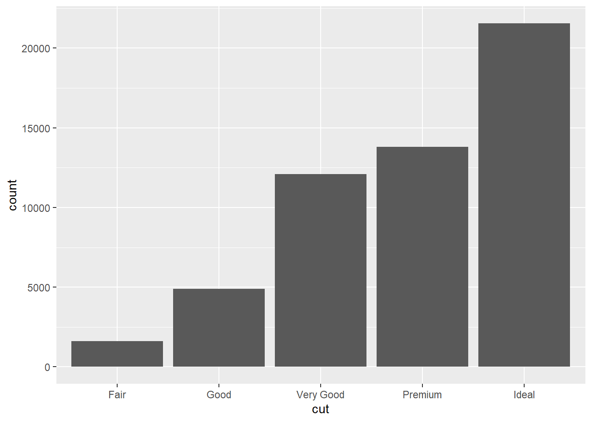
demo = tribble(
~a, ~b,
"bar1", 20,
"bar2", 30,
"bar3", 40
)
demo# A tibble: 3 × 2
a b
<chr> <dbl>
1 bar1 20
2 bar2 30
3 bar3 40ggplot(data = demo) + geom_bar(mapping = aes(x=a, y=b), stat = "identity")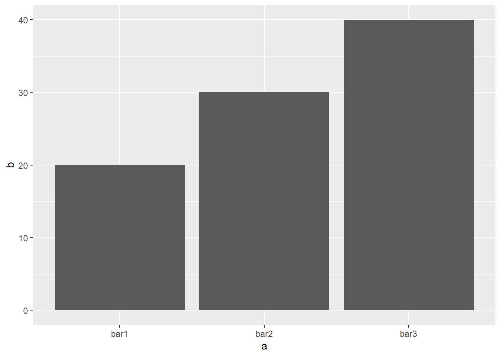
4.2 Σχετικών συχνοτήτων
ggplot(data = diamonds) + geom_bar(mapping = aes(x = cut, y = ..prop.., group = 0))Warning: The dot-dot notation (`..prop..`) was deprecated in ggplot2 3.4.0.
ℹ Please use `after_stat(prop)` instead.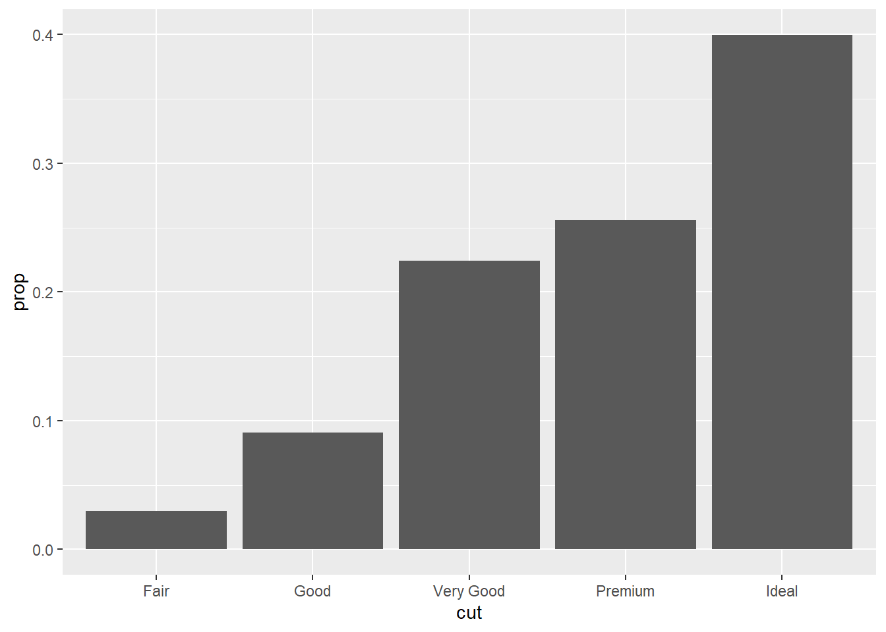
4.3 Χρωματισμοί
ggplot(data = diamonds) + geom_bar(mapping = aes(x=cut, color=cut))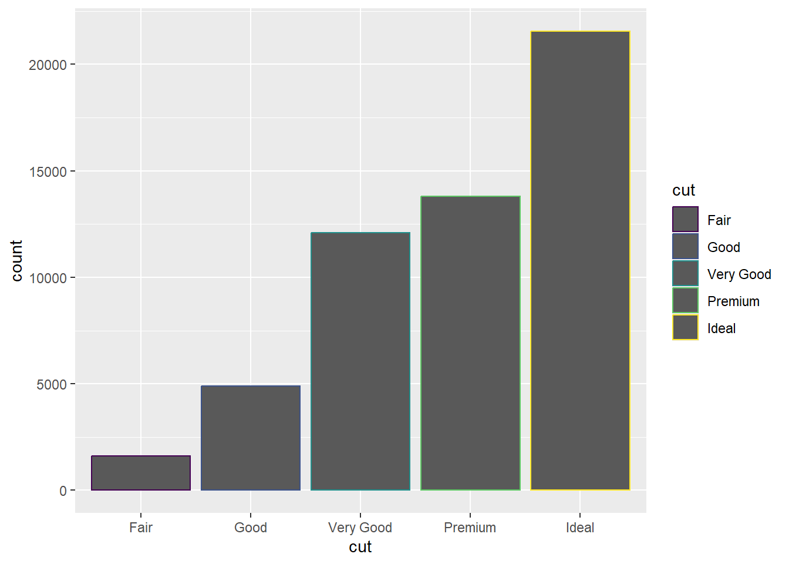
ggplot(data = diamonds) + geom_bar(mapping = aes(x = cut, fill= cut))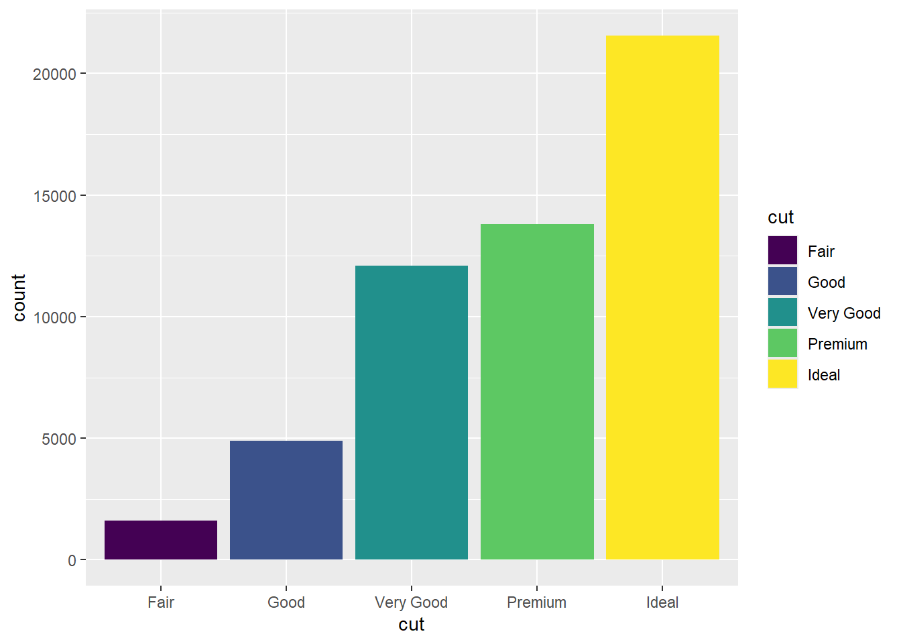
4.4 Απεικόνιση ομάδων
ggplot(data = diamonds) + geom_bar(mapping = aes(x=cut, fill = clarity))
ggplot(data = diamonds, mapping = aes(x=cut, fill = clarity)) + geom_bar(alpha = 1/5, position = "identity")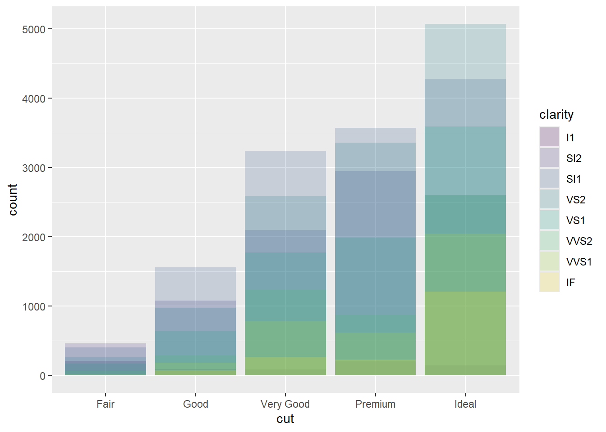
ggplot(data = diamonds, mapping = aes(x = cut, color=clarity)) + geom_bar(fill=NA, position = "identity")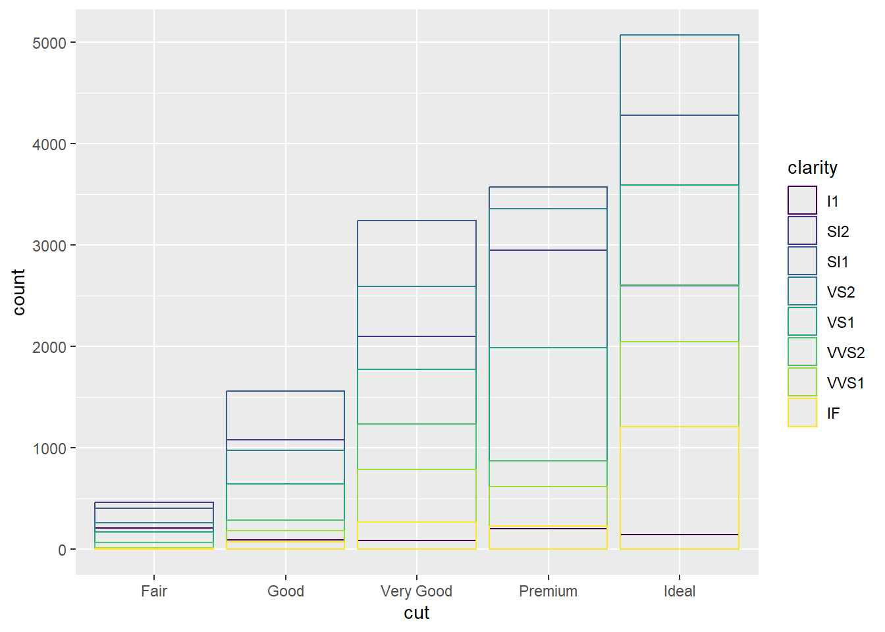
ggplot(data = diamonds, mapping = aes(x=cut, fill = clarity)) + geom_bar(position = "fill")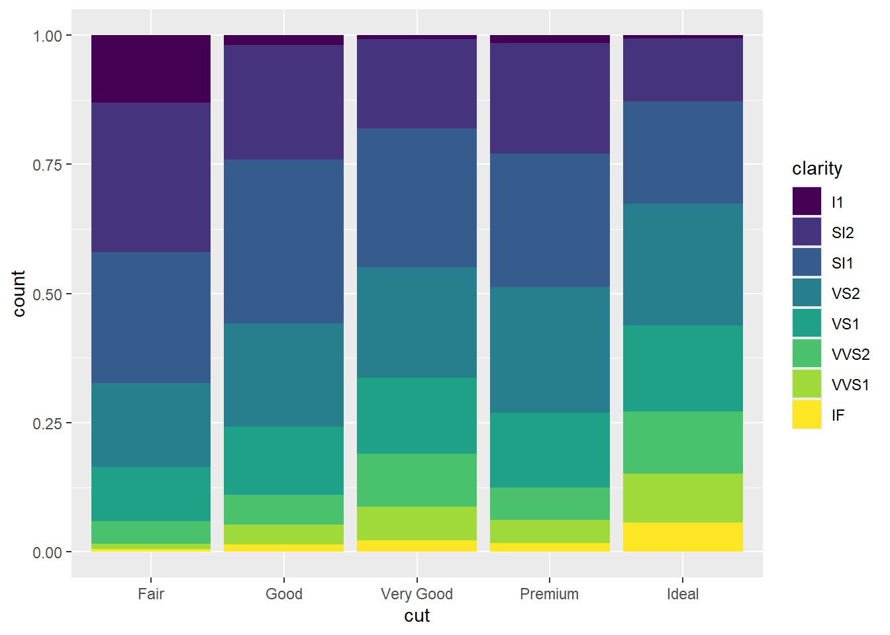
ggplot(data = diamonds) + geom_bar(mapping = aes(x=cut, fill = clarity), position = "dodge")
5 Jitter (geom_jitter)
ggplot(data = mpg) + geom_point(mapping = aes(x=displ, y=hwy), position = "jitter")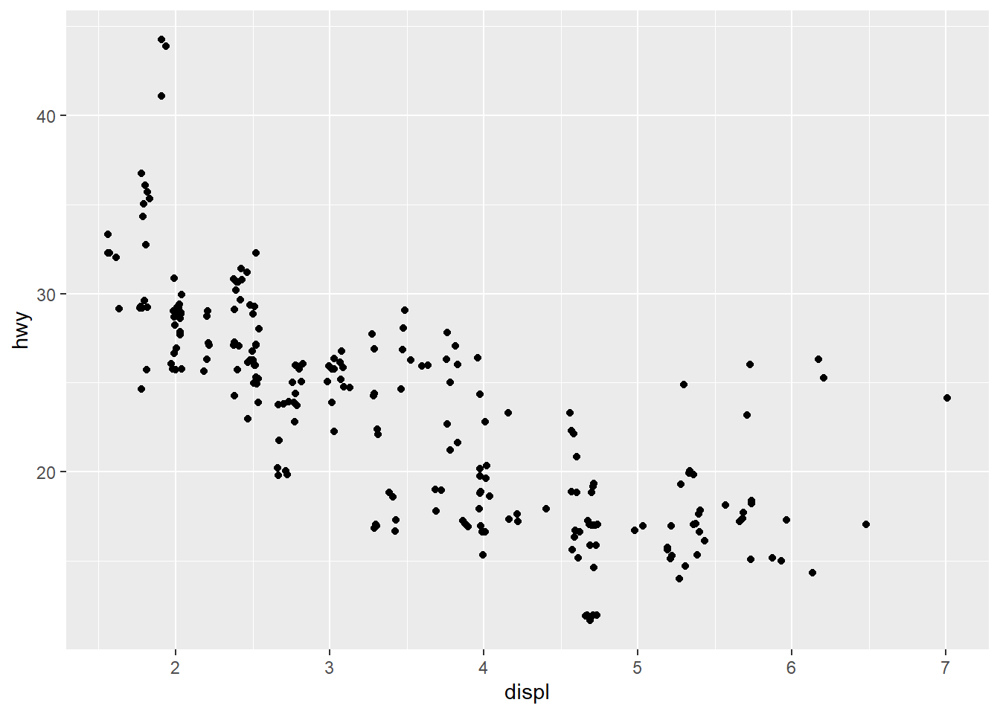
ggplot(data = mpg) + geom_jitter(mapping = aes(x=displ, y=hwy))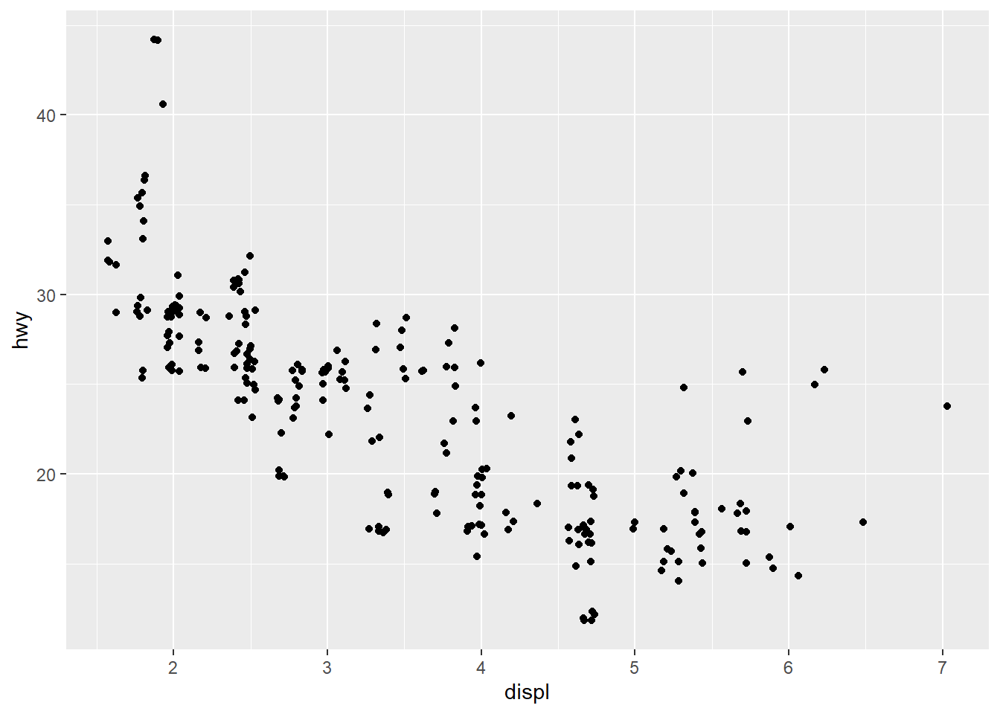
6 Θηκόγραμμα (geom_boxplot)
6.1 Απλό
ggplot(data = mpg) + geom_boxplot(mapping = aes(x=class, y=hwy))
6.2 Αντιστροφή συντεταγμένων
ggplot(data = mpg) + geom_boxplot(mapping = aes(x=class, y=hwy)) +coord_flip()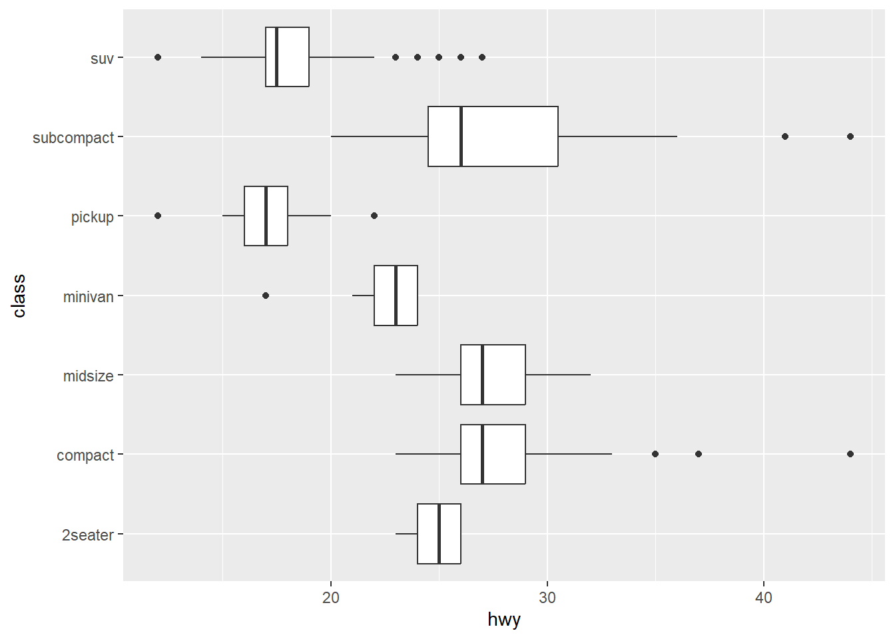
6.3 Με jitter
ggplot(data = mpg, mapping = aes(x=class, y=hwy)) + geom_boxplot(outliers=F) + geom_jitter()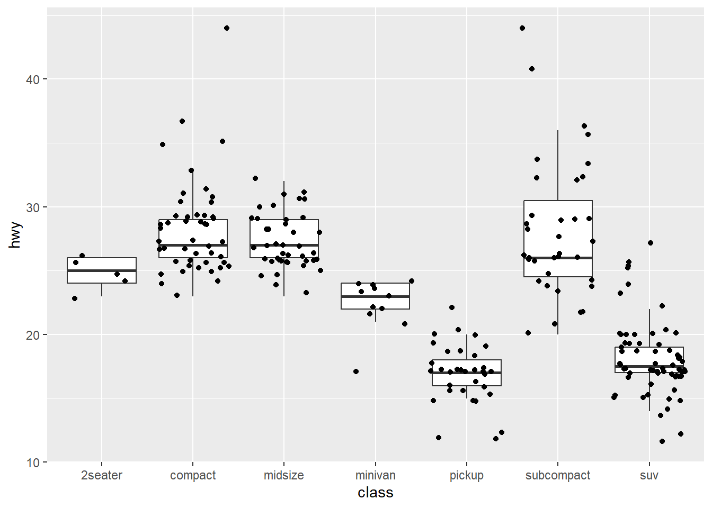
7 Πολικές συσντεταγμένες (coord_polar)
ggplot(data = diamonds, mapping = aes(x=cut, fill=cut)) + geom_bar() + coord_polar()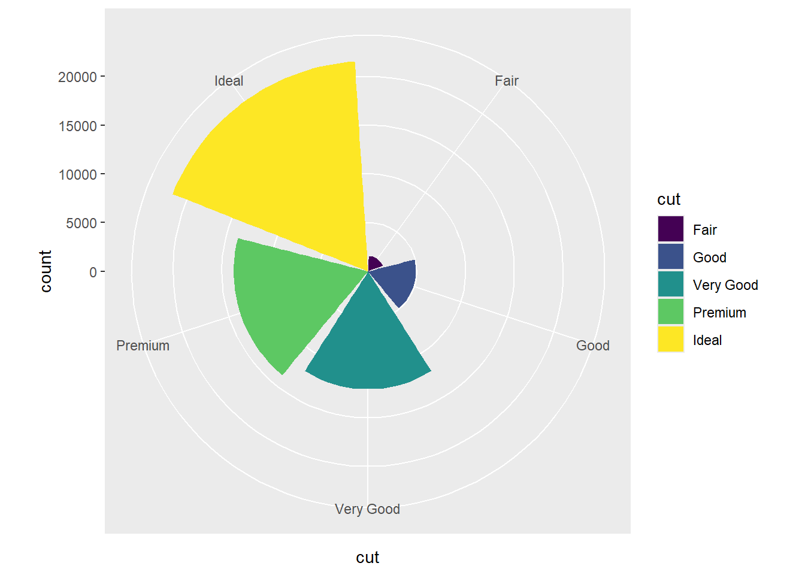